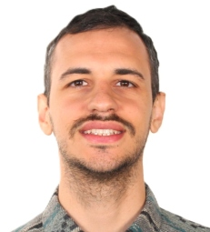

Valerio Marsocci
Research Fellow at ESA Φ-lab, working on machine learning and Earth observation, with a focus on geospatial foundation models, learned representations and multimodal remote sensing.
Previously postdoctoral researcher at KU Leuven and CNAM; PhD in Data Science at Sapienza University of Rome.
Geospatial Foundation Models, Earth Embeddings, Representation Learning, Multimodal Learning, Self-Supervised Learning, Earth Observation, SAR, Spatiotemporal Learning.
valerio.marsocci [at] esa [dot] int
News
- 09/2026I will be an invited keynote speaker at MACLEAN 2026, the Machine Learning for Earth Observation workshop at ECML-PKDD in Naples.
- 10/2026Co-organising TerraBytes II, the second edition of our workshop on global datasets and models for Earth observation, at ECCV 2026.
- 05/2026The 2nd ESA–NASA Workshop on AI Foundation Models for Earth Observation took place in Huntsville. I was part of the programme leadership and helped shape the scientific sessions.
- 02/2026PANGAEA is now published in IEEE Geoscience and Remote Sensing Magazine.
- 10/2025Three papers at ICCV 2025: TerraMind, Embedding Deflection, and Generative Geospatial Diffusion Models as GFMs.
- 07/2025I presented work on benchmarking geospatial foundation models at the AI for Good Global Summit.
- 07/2025The first TerraBytes workshop was held at ICML 2025 with PMLR proceedings.
- 05/2025Recognised as an Outstanding Reviewer for CVPR 2025.
Selected publications
-
PANGAEA: Assessing Geospatial Foundation Models Capabilities through a Global and Inclusive BenchmarkIEEE Geoscience and Remote Sensing Magazine, 2026
-
TerraMind: Large-Scale Generative Multimodality for Earth ObservationICCV, 2025
-
Parameter-Efficient Adaptation of Geospatial Foundation Models through Embedding DeflectionICCV, 2025
-
Can Generative Geospatial Diffusion Models Excel as Discriminative Geospatial Foundation Models?ICCV, 2025
-
Continual Barlow Twins: Continual Self-Supervised Learning for Remote Sensing Semantic SegmentationIEEE JSTARS, 2023
-
Inferring 3D Change Detection from Bitemporal Optical ImagesISPRS Journal of Photogrammetry and Remote Sensing, 2023